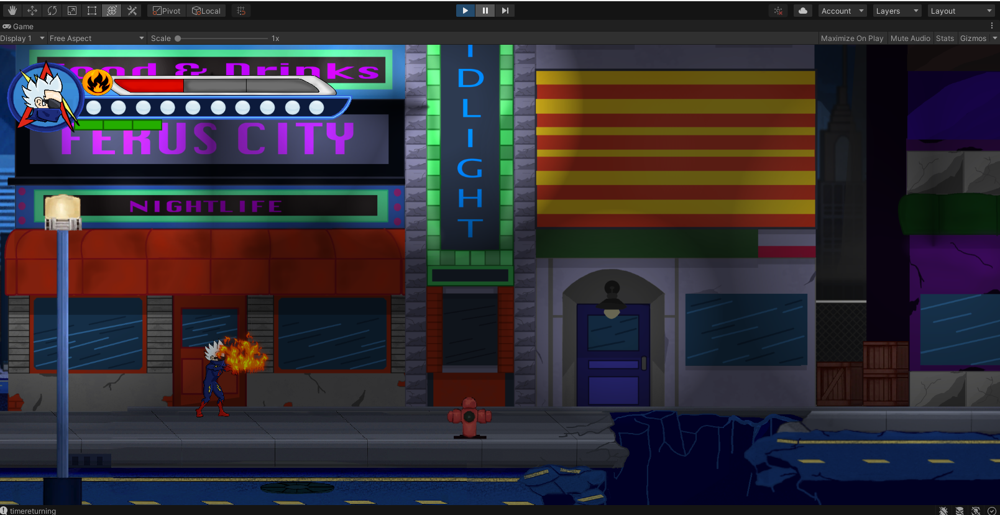
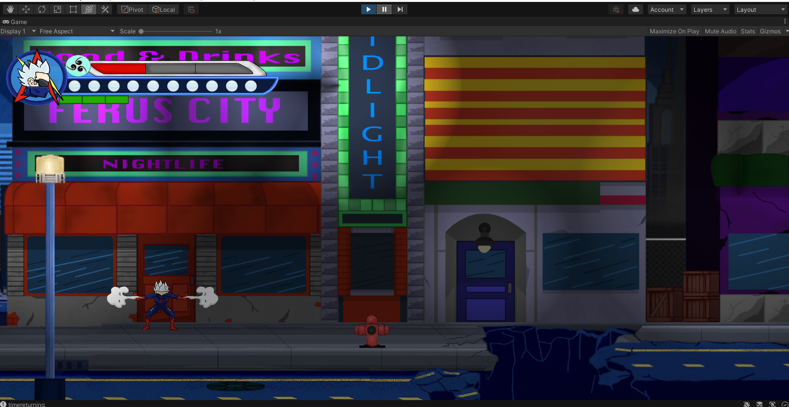
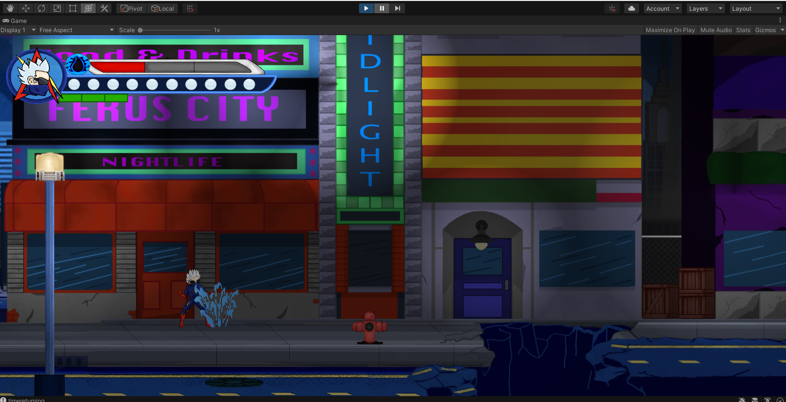
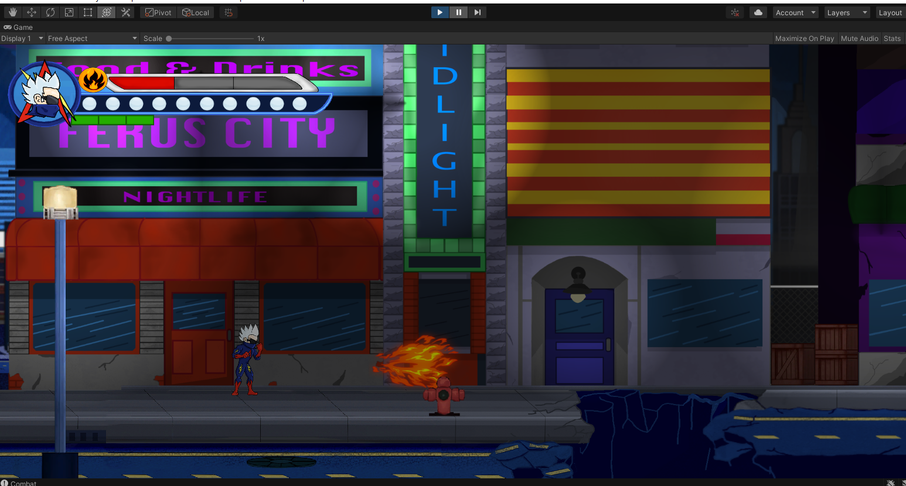
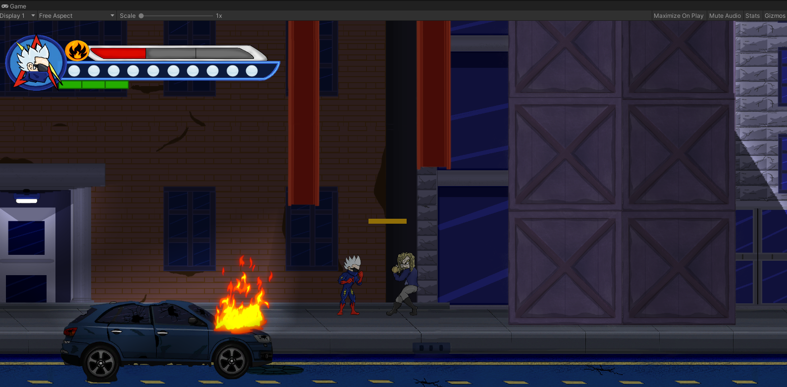
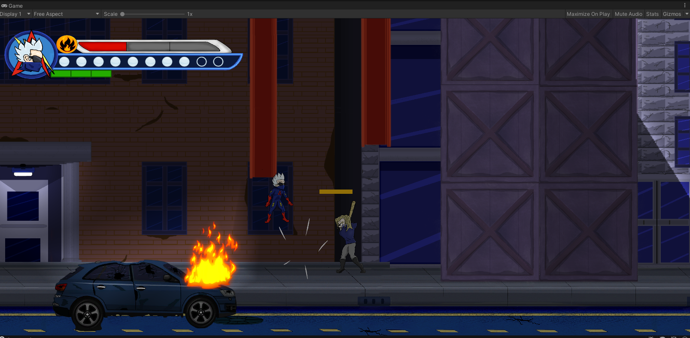
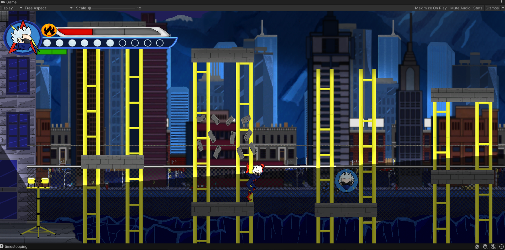
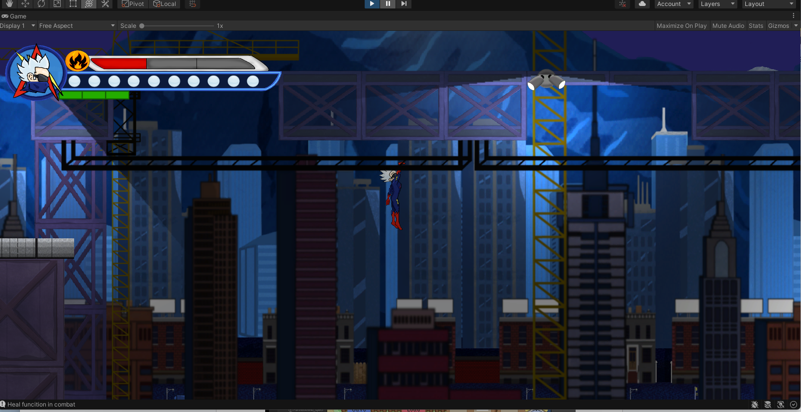
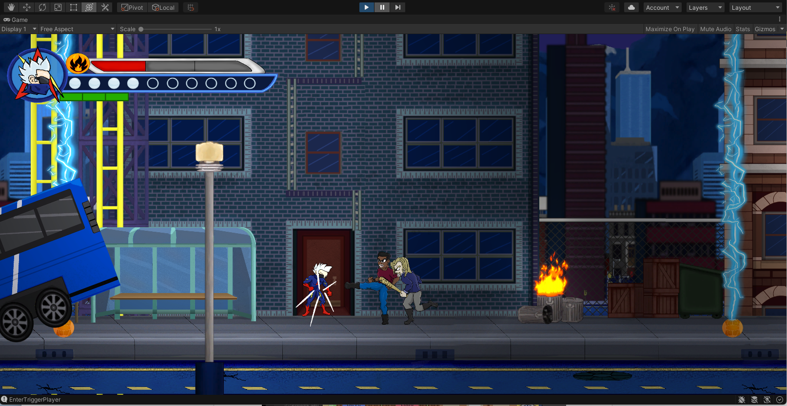
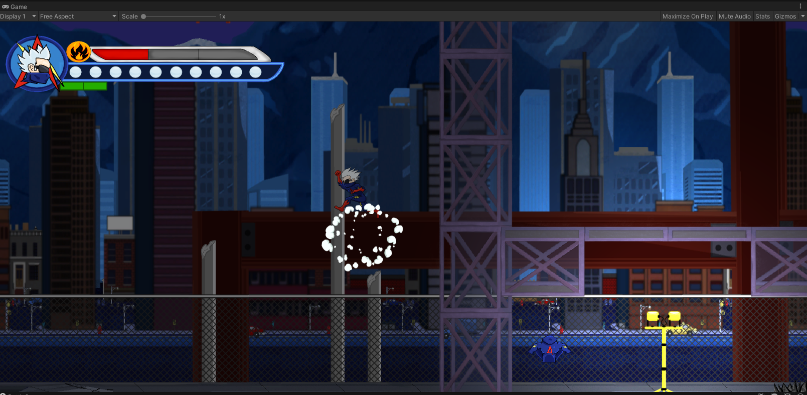
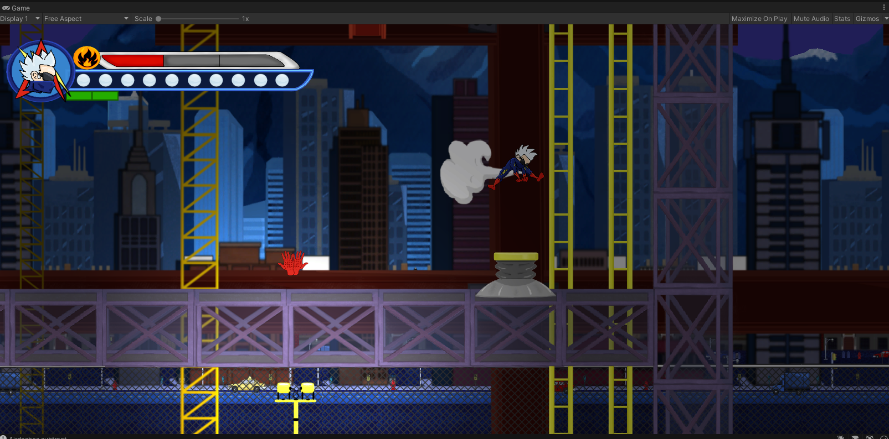
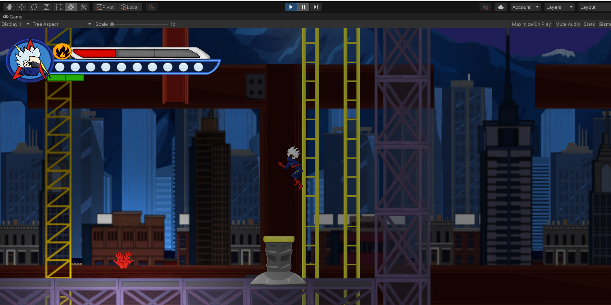
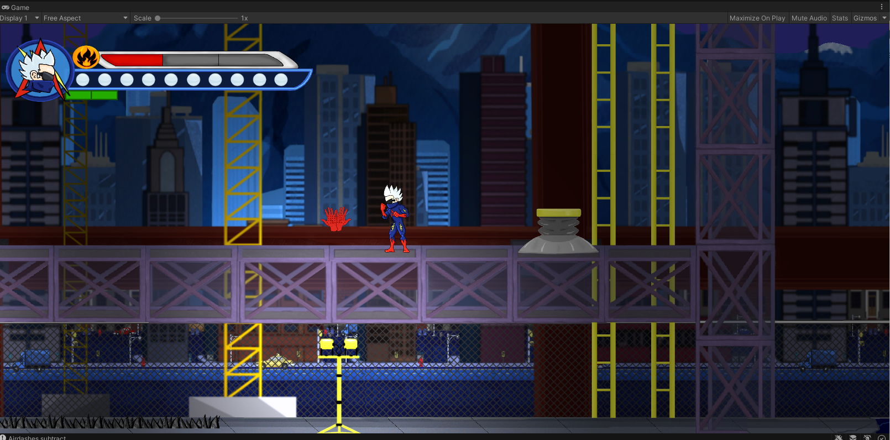
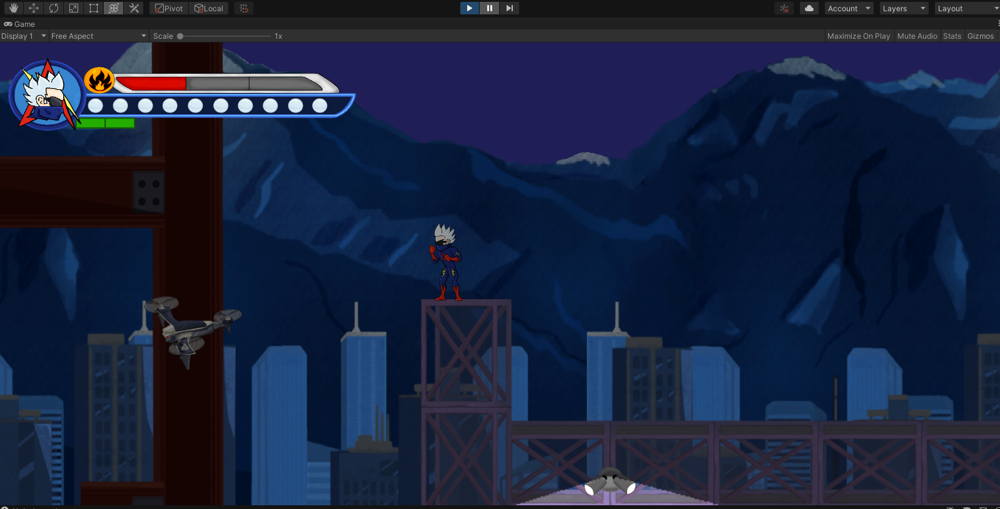
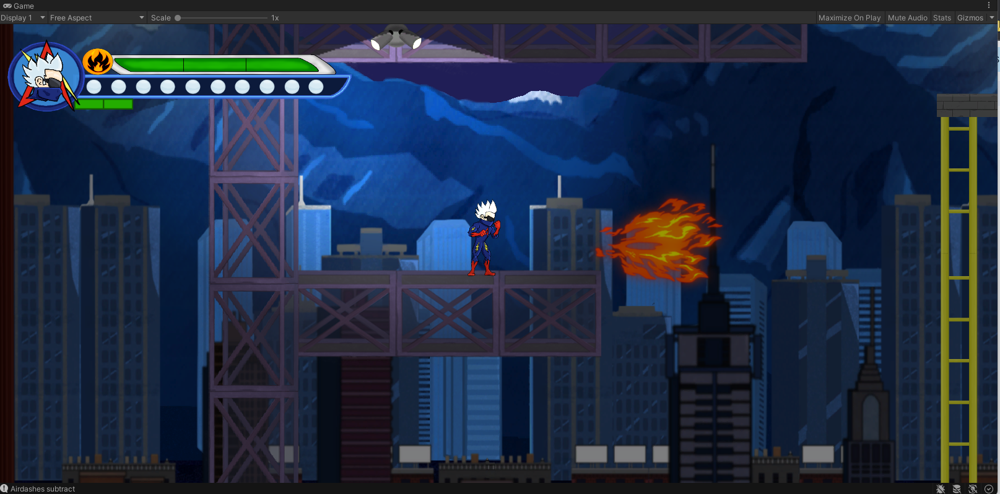
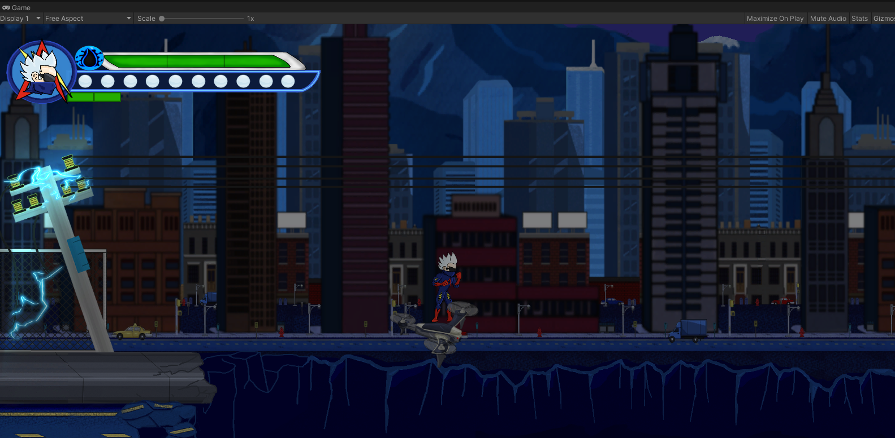
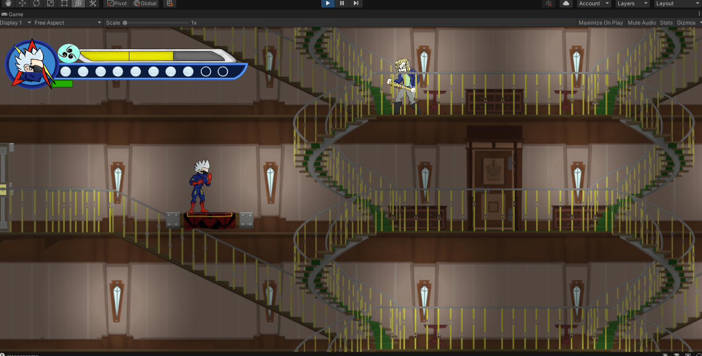
Creating Fluid and Interactive Gameplay
-
The goal of this project was to learn the basics of Object Oriented Programming (C#) while exploring the technical aspects of Unity.
-
Created numerous enemies:
-
All enemies implement state machine behavior (See below for detail)
-
Enemies transition to and from states based on environmental conditions.
-
Tracking a player within their field of View.
-
Charging a player.
-
Evading a player.
- Using a ranged or close combat attack.
- Enemies detect environmental hazards and avoid them.
- Enemies Utilize their FOV to incorporate a basic stealth system.
- Upon player detection, observer pattern and event system is used to respond and implement various behaviors.
- Player can crouch to go unnoticed and get close enough to use a 'stealth takedown' attack on 'stealth enemies.'
- I created an expansive weapon system where the player character can alternate between 3 types of attacks. Each attack type has 3 corresponding melee combinations and a set of projectiles.
- Projectiles can be shot in 1 of 5 directions, responding to player input and using Mathf.Atan to store a directional value and pair an enum to it. e.g. Up, Right, UpRight etc.
- The weapon and projectile system utilizes scriptable objects for storing attack specific data.
- The weapon and projectile system responds to power-ups found in the game. Interfaces provide the connection to power-up and weapon attribute.
- Player character has a state machine pattern that allows multiple behaviors and methods of traversal to be implemented. Some states include:
-
Wall slide
-
Wall jump
- Sprint
- Run
- Crouch
- Crawl
- Swing
- Slide
- Air Dash
- Dodge
- Hazard Bound
- States are Initialized via the Player Class, a Monobehaviour that utilizes its Awake and Update methods to set Constructor References, and Initialize the StateMachine Class.
- States are Divided into Super state and Sub stated for greater code organization based on common behaviors.
- States utilize Core Components, Child game objects that contain reference to required components such as:
-
Collision Senses: raycasts colliders etc.
- Movement functions
- Particles
- Death Responsibility functions
- Combat specific Components: Damage and Knockback
- Stats
- Combat system makes use of interfaces to interact with health values.
- Animator events are used to trigger damage during attacks, creating precise combat control.
- Many environment interactions and behaviors:
-
Screen fading during level transition.
-
Screen shake system (for combat).
-
Key and door system.
-
Falling platforms
-
Springs that bounce player in the air.
-
2D Lighting (Universal Render Pipeline)
-
Switches: Timer switches and regular, on-off switches.
-
Combat Controled areas: Trigger forced combat and locked screen upon entering collider.
-
Numerous Environmental Hazards:
-
Pitfalls that reset position.
-
Spikes that deal damage and apply directional knockback.
-
Activating drones and turrets.
-
Many Types of items:
-
Ability power-ups
- Health refill
- Extra Life
- Projectile Power-ups
-
In Depth Health system.
- Features Hit Points and life bars. When all hit points are lost, one life bar is subtracted and player enters 'knockout' state until recovered.